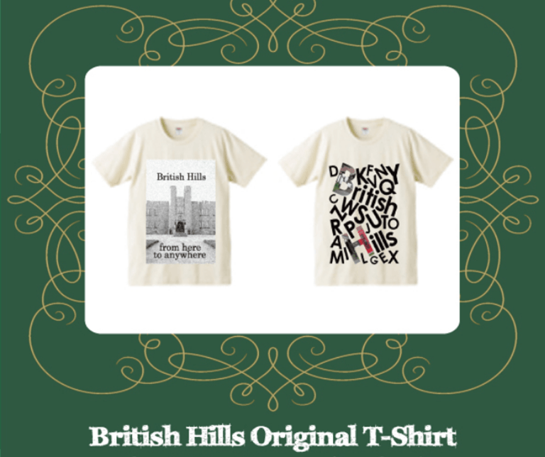
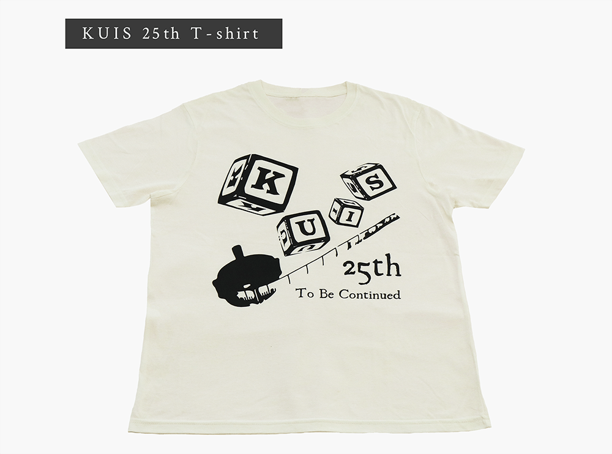
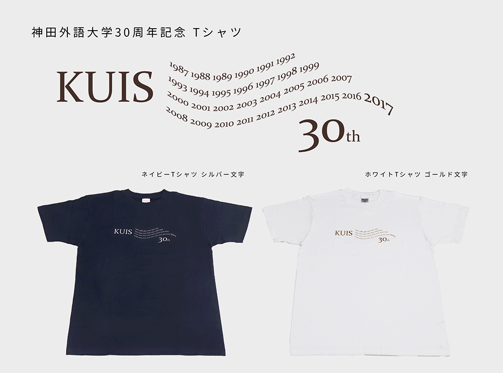

すべてを学生の力で、
多様な新機軸を
「くいすぐっず」をリソースとして進み始めた「和田ゼミ社会起業研究会」だが、いざ恒常的に活動するとなると、持続させ、新機軸を打ち出し続けることは想像以上に大きな挑戦となった。資金調達から商品企画、デザイン、制作、撮影、モデル、宣材制作、SNS発信、営業、店舗設営、販売、コスト管理まで、すべてを「毎年世代交代する学生」で担う難しさであった。

何よりも新規商品の開発投入は難題で、衣類やタオルだけでなく、バッグ、文具、お土産、ポストカード、食品、ステッカーなど、多岐にわたる新商品の開発に悩みは尽きなかった。デザインの魅力も生命線で、妥協することなく、眠れぬ夜も多く過ごした。販路開拓も必須で、学園祭での定例販売に加え、夏前のＴシャツ特別販売、秋口のパーカー特別販売、学内売店での常設販売など多くの試行を重ねた。
しかし、そうした「苦労」は大きな「糧」となった。アイディアを育み、挑戦し続けた経験は私たちに力を与えてくれ、このStep2で養われた創造力はStep3への推進力となっていく。

Step2で花開いた「くいすぐっず」は、色展開を含めると、これまでの17年間でTシャツ122種、パーカー・スウェットパンツ39種、バッグ類53種、タオル29種、文具26種、カップやタンブラー17種、食品11種、ポストカード、缶バッチなども含めると、総計570種と膨大な数にのぼる。
- クラッチバッグ
-
-に大ヒット！
教科書を入れ、抱えてカッコよく

- ランチトートバッグ
-
7割を超える女子学生をターゲットに、
ランチのお供に

- Tシャツ
-
創業時から必ずつくった極めつけ、
定番デザインからユニークなものまで多種多様

- パーカー
-
から登場、
豊富なカラーバリエーションを展開してきた

- スポーツタオル
-
部活の学生をターゲットに、
ロゴが目立つスポーティーなデザインを

- タンブラー
-
外国語大学らしい、
多言語や国旗のデザインが魅力的

- マグカップ
-
毎日のお茶のお供に、卒業記念にも、
KUISの文字を個性あふれるデザインに

- 文房具
-
大学生活に欠かせない、
毎日の勉強グッズもKUIS色に

- たべもの
-
チョコレート、饅頭、どらやきなど、
包装や焼印にもこだわりが

地元商店・企業・大学との協働
「くいすぐっず」の定着とともに、地元商店、企業、大学とのコラボレーションも始まり商品開発が進んだ。地元商店とは幕張発祥の「さつまいも」を素材としたスイーツの開発、大学とは卒業記念、新入生歓迎、大学周年、スポーツ大会、オープンキャンパスなどのグッズに加えて、大学来客や留学提携校へのお土産、留学生記念品など「特注品」の開発が途切れることはなかった。
disk unionとの提携バッグ。建学理念"言葉は世界を繋ぐ平和の礎"を中心に、背景のKUISの文字は、世界の国々を寄せ集め「言葉で世界をつなぐ大学」をイメージした。

大学関連の異文化学習宿泊施設British Hillsでの販売用Tシャツ。新しいブランドイメージを創出し、楽しく参画できる場をテーマとした。
Designer:横井研二
大学のオープンキャンパスに参加した高校生用記念グッズ。印象に残るカラフルで楽しいデザインを心がけ、受験生への応援メッセージを同封した。
Designer: 佐藤謙（ファイル）
Designer: 有田奈緒子（リーフレット）
大学創立20周年記念のクラッチバッグ。エナメル地に、赤いスクエアで20周年を目立たせたスタイリッシュなデザインに。50点限定。缶バッチも販売し、シールと手提げ袋はオープンキャンパス用に大学へ提供した。
Designer: 福原聖人

大学創立25周年記念のTシャツ。オーガニックコットン100%を使用し、肌触りが良く、今までにない高級感を打ち出す。
Designer: 高木里み・大村久美子

創立30周年記念募金に応募いただいた方々への大学からのお礼の品。「白地に金」「紺地に銀」の特製限定Tシャツ。彗星をモチーフにした流れる年号は、思い出に残る年を思い起こすきっかけとなることを願ってのもの。
Designer:森慶太（ゼミOB)
誰もが愛着もてる、ブランドへ
より、目玉キャラクターのロゴ、愛称「くいちゃん」を誕生させた。「くいすぐっず」を持つことで日常がより楽しくなる、そんな願いを込めて、活動的で明るい黄色を基調とし、さらに親しみをもってもらえるブランドをめざした。
足跡を刻み、メッセージを伝える
「くいすぐっず」から伝えたいことを一冊の本にしました。

和田ゼミ社会起業研会ブックレット
『「くいすぐっず」からすべては始まった！』PDF